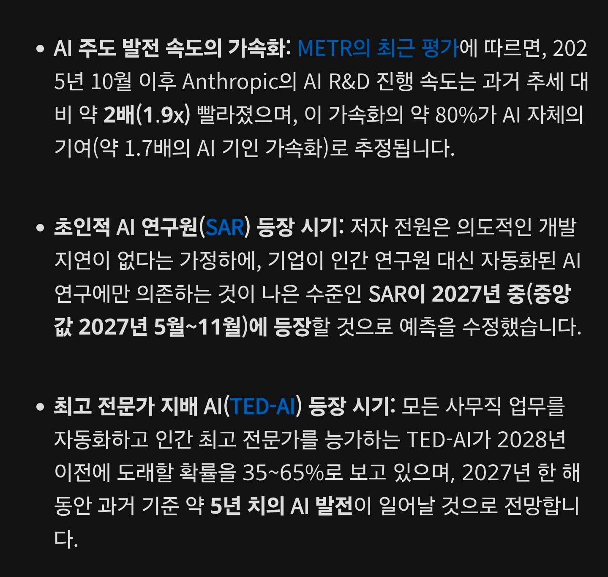

최근 미국 비영리 연구소 METR의 연구결과대로라면
내년 AI 지능 폭발이 일어날거라고 해서 화가났다고 함
이 사람은 인위적으로 AI개발을 늦춰서
2040년까진 미루자고 주장했던 사람임

최근 미국 비영리 연구소 METR의 연구결과대로라면
내년 AI 지능 폭발이 일어날거라고 해서 화가났다고 함
이 사람은 인위적으로 AI개발을 늦춰서
2040년까진 미루자고 주장했던 사람임
좆들갑 떨고있네
핵융합이랑 상온초전도체랑 암백신이랑 치매치료약이랑 탈모약 만들어달라해
근데 직장이 없어서 탈모약 살 돈이 없다면
시대의 흐름을 개인이 막는게 가능할까 이미 세상에 알려진이상..
지금 사용중인 컴퓨터에 저장된 앱과 데이터를 유지한채,
완전한 새로운 OS로 변환 마이그레이션이 가능하기 전까지는,
AI 특이점이 절대 아니다.
ai를 사전에 훈련 시켜도 현실의 문제를 풀려고 하면 학습이 아닌 경험이 필요함.
최대한 사전 학습으로 기초 데이터를 증류하고는 있지만... 어느정도 사이즈 이상은 칩과 메모리 한계로 효율이 떨어짐.
요즘은 학습이 끝난 ai에 일을 시킨후 다른 ai로 오류를 잡아내어 바이너리 데이터를 직접 수정 해서 오류를 없애는 방식으로 개선을 하고 있음.
그래도 칩과 메모리의 처리속도와 용량 한계라는 근본 원인은 해결 안됨.
엔비디아가 TSMC 에 HBM 같은 접합이 아닌 실리콘 단계에서 메모리 셀을 층층이 쌓는 메모리칩 제조를 문의 했다고 하는데 이게 생각보다 어려움.
삼성에서도 실리콘 단계에서 5층 정도의 메모리 셀을 쌓은 시제품을 제작 했지만 시장성이 없다고 판단해 덮었다고 함.
하지만 요즘 분위기를 보면 이런 메모리가 엄청난 가격을 불러도 사갈 수 있을 것 같음.
문제는 양자효과 때문에 셀 크기를 실질적으로 줄이지 못하므로 셀단위의 발열과 전기는 그대로 라는 것임.
즉 1의 면적에 10층을 쌓으면 8~9정도의 전기와 열은 그대로 라는게 문제임.
메모리 칩은 약 300도 정도에서 생산하는데 논리칩은 600도 정도에서 생산한다는 공정의 차이로 메모리와 논리소자를 결합하는데도 문제가 있다함.
그래도 메모리와 논리소자를 큐빅처럼 쌓아 만드려는 시도는 계속 진행될거로 보임.
??? : 난 너무 위험하다
지금 시점에서 미루는건 에바같은데 사람들 여럿 나앉을거라 최대한 빨리 특이점 가는게 맞다
그곳이 폭발합니다
내가 할 수 있는게 있긴 하냐. 70시간만에 밀레니엄 문제 푸는 모델도 이미 몇개월 전 모델이고 RSI 초입에 들어섰다는 얘기가 여기저기에서 새어나오는데.
다들 가족이랑 시간 많이 보내라.
쟤네도 할수 있는게 없으니 우린 더더욱이나 없지
제발 빨리 지배해주세요
지배할 가치가 있냐?
난 스스로를 평가할때 장담 못하겠다
지배할 가치가 없으면 어떡할까? 제거하지 싶다...
우리가 바퀴벌레를 지배하거나 기를 필요가 없으니 제거하듯이
제거비용보다 덜 들면 괜찮을듯
비공개 고성능 AI를 직접 다루는거랑 시판된거랑 다르니까...
번역조차도 오역내고 있는데 무슨...
전문가 ai는 신약개발 등등한다는데 레벨 차이가 얼마나 나는건지